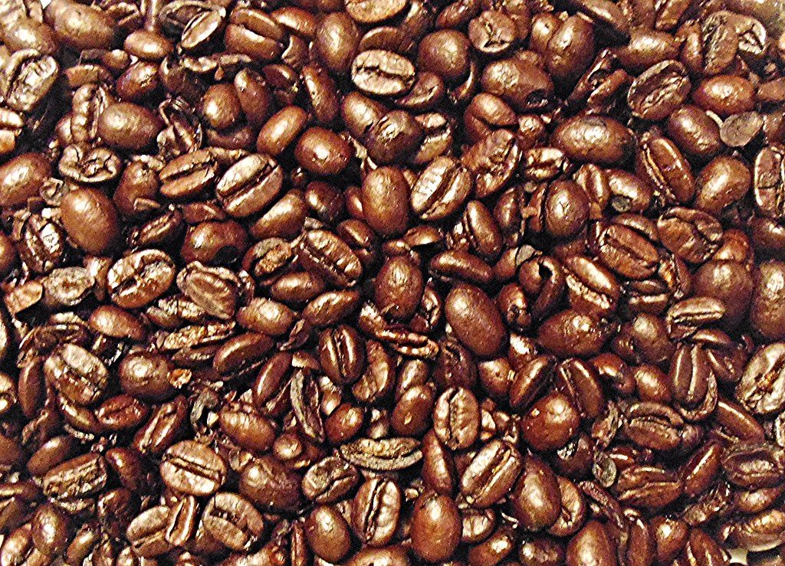

色の濃さは制作側の案です。ページごとに、淡い色から深い色へ並べています。
お店の情報について
掲載できる情報は、まだ多くありません。わかっていることだけを載せています。
- 営業時間
- 準備中(お問い合わせください)
- 定休日
- 準備中(お問い合わせください)
- メニュー
- 準備中(お問い合わせください)
- 料金
- 準備中(お問い合わせください)
お店の最新の情報は、お電話またはInstagramでご確認ください。


場所は、地図で確かめられます。
地図で場所を確かめる色の濃さは制作側の案です。ページごとに、淡い色から深い色へ並べています。
掲載できる情報は、まだ多くありません。わかっていることだけを載せています。
お店の最新の情報は、お電話またはInstagramでご確認ください。

場所は、地図で確かめられます。
地図で場所を確かめる